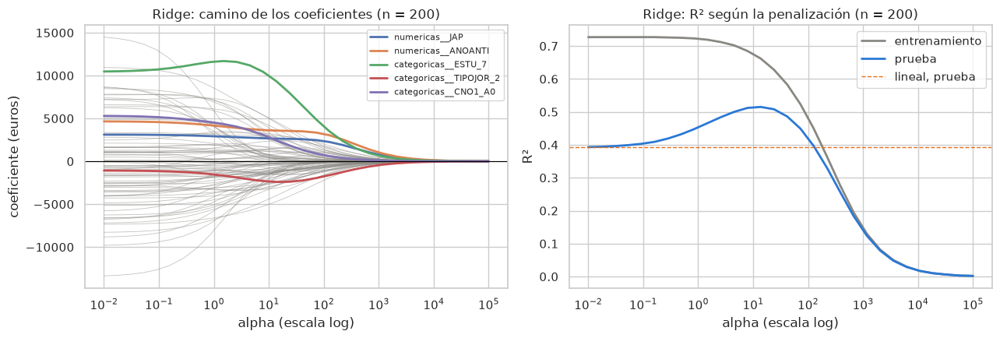
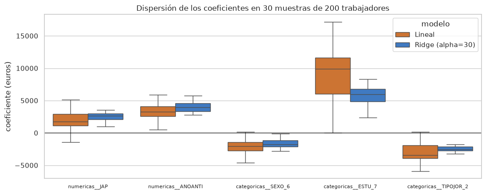
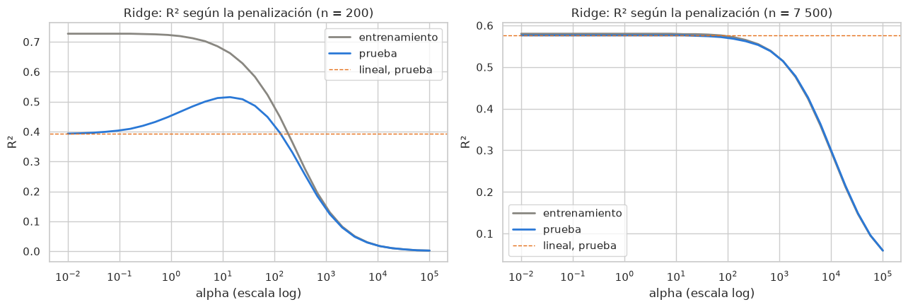
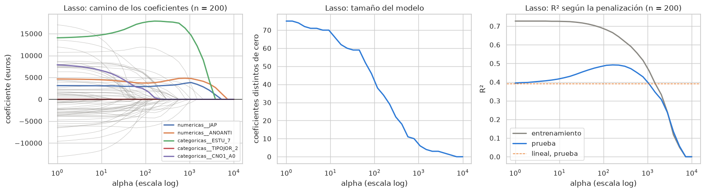
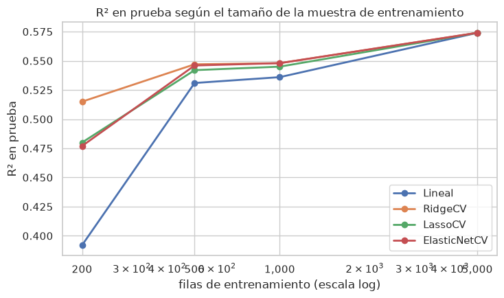

Datos: Encuesta Cuatrienal de Estructura Salarial 2022 (INE), microdatos anonimizados.
Qué vamos a hacer
Este cuaderno continúa el anterior (Introducción a Python para predicción). Allí ajustamos una regresión lineal por mínimos cuadrados para predecir el salario anual. Aquí vamos a modificar ese modelo de una forma que a primera vista parece extraña: le vamos a impedir que ajuste demasiado bien los datos de entrenamiento, penalizando el tamaño de sus coeficientes. Veremos con datos reales por qué eso puede mejorar las predicciones sobre datos nuevos, cuándo lo hace y cuándo no.
Las tres variantes que estudiaremos son la regresión Ridge, el Lasso y su combinación, Elastic Net. Las tres están en scikit-learn y encajan en el Pipeline del cuaderno anterior cambiando una sola línea.
Si conocéis glmnet de R, este cuaderno es su equivalente en Python. Al final hay una tabla de correspondencias, con un aviso importante sobre los nombres de los parámetros.
Objetivos
Al terminar deberías ser capaz de:
Explicar qué es el sobreajuste y reconocerlo comparando el error en entrenamiento y en prueba.
Escribir la función de pérdida de Ridge y de Lasso y explicar qué hace el parámetro de penalización.
Ajustar Ridge, Lasso y ElasticNet dentro de un Pipeline y leer sus coeficientes.
Interpretar el camino de los coeficientes al variar la penalización, y la diferencia entre encoger (Ridge) y anular (Lasso).
Elegir la penalización por validación cruzada con RidgeCV, LassoCV y ElasticNetCV, sin usar el conjunto de prueba.
Cómo trabajar con el cuaderno
Igual que en el anterior: ejecuta las celdas en orden, lee la celda de texto que sigue a cada resultado y resuelve los bloques Ejercicio en el momento, con lo visto hasta ese punto. Tiempo estimado: unas dos horas.
0. Preparación: lo que ya hicimos en el cuaderno anterior
Repetimos, condensados en pocas celdas, los pasos del cuaderno de introducción: cargar los datos, limpiar la respuesta, fijar los roles de las variables y partir en entrenamiento y prueba. No hay nada nuevo hasta la sección 1; si algo no te resulta familiar, vuelve al cuaderno anterior.
Las únicas novedades en los import son los modelos penalizados: Ridge, Lasso, ElasticNet y sus versiones con validación cruzada RidgeCV, LassoCV, ElasticNetCV. Todos están en sklearn.linear_model, el mismo módulo que LinearRegression.
import warningswarnings.filterwarnings("ignore") # oculta avisos que no afectan a los resultadosimport numpy as npimport pandas as pdimport matplotlib.pyplot as pltimport seaborn as snsfrom sklearn.model_selection import train_test_splitfrom sklearn.compose import ColumnTransformerfrom sklearn.pipeline import Pipelinefrom sklearn.preprocessing import StandardScaler, OneHotEncoderfrom sklearn.linear_model import LinearRegression, Ridge, Lasso, ElasticNetfrom sklearn.linear_model import RidgeCV, LassoCV, ElasticNetCVfrom sklearn.metrics import r2_score, mean_absolute_error, root_mean_squared_errorsns.set_theme(style="whitegrid")SEMILLA =42AZUL, NARANJA, GRIS ="#2a78d6", "#e5701a", "#898781"print("Librerías cargadas")
Librerías cargadas
URL_DATOS ="https://juandmontoro.github.io/tap/data/EES_2022.tab"df = pd.read_csv(URL_DATOS, sep="\t", low_memory=False)df.columns = [c.replace('"', "").strip() for c in df.columns] # algunos nombres vienen entre comillas# Misma limpieza y misma muestra que en el cuaderno anteriortope = df["RETRINOIN"].quantile(0.99)limpio = df[(df["RETRINOIN"] >0) & (df["RETRINOIN"] <= tope)]datos = limpio.sample(n=10000, random_state=SEMILLA).reset_index(drop=True)print("Muestra de trabajo:", datos.shape)
Muestra de trabajo: (10000, 56)
Los roles de las variables son los mismos: la respuesta es el salario bruto anual RETRINOIN, quedan fuera los componentes del salario (fuga de información), los identificadores y el peso muestral, y usamos como predictores las 14 categóricas y las 2 numéricas del cuaderno anterior.
En este cuaderno vamos a ajustar muchos modelos, así que conviene escribir dos funciones que repitan el trabajo por nosotros. En Python una función se define con def, igual que con function() en R; lo que devuelve se indica con return.
crear_preprocesador() devuelve un ColumnTransformernuevo cada vez que se llama. Es importante que sea nuevo: un Pipeline ajusta sus pasos “en sitio”, y si dos Pipeline compartieran el mismo objeto, el segundo ajuste pisaría al primero.
evaluar() ajusta un Pipeline sobre unos datos de entrenamiento y devuelve, en un diccionario, el R² en entrenamiento y en prueba, el RMSE y el MAE en prueba, y cuántos coeficientes son distintos de cero. Ese último número será importante con Lasso.
Un diccionario (dict) es una colección de pares clave-valor, como una list con nombres en R: {"R2_test": 0.58, "RMSE": 11707}.
def crear_preprocesador():return ColumnTransformer( transformers=[ ("numericas", StandardScaler(), PRED_NUMERICOS), ("categoricas", OneHotEncoder(handle_unknown="ignore", min_frequency=0.01, sparse_output=False), PRED_CATEGORICOS), ], remainder="drop", )def evaluar(modelo, X_entrena, y_entrena, X_prueba=None, y_prueba=None):# Ajusta el Pipeline `modelo` en (X_entrena, y_entrena) y lo evalúa en pruebaif X_prueba isNone: # por defecto, el conjunto de prueba global X_prueba, y_prueba = X_test, y_test modelo.fit(X_entrena, y_entrena) pred_entrena = modelo.predict(X_entrena) pred_prueba = modelo.predict(X_prueba) coef = modelo.named_steps["modelo"].coef_return {"R2_train": round(r2_score(y_entrena, pred_entrena), 3),"R2_test": round(r2_score(y_prueba, pred_prueba), 3),"RMSE_test": round(root_mean_squared_error(y_prueba, pred_prueba)),"MAE_test": round(mean_absolute_error(y_prueba, pred_prueba)),"coef_no_nulos": int((np.abs(coef) >1e-8).sum()),"coef_total": len(coef), }print("Funciones definidas")
Funciones definidas
1. Punto de partida: la regresión lineal
Volvemos a ajustar el modelo del cuaderno anterior, ahora con las funciones auxiliares. Fíjate en que el último paso del Pipeline se llama "modelo"; ese nombre es el que usa evaluar() para extraer los coeficientes.
El R² en prueba es 0,58. El R² en entrenamiento es prácticamente igual al de prueba: el modelo no está sobreajustando. Tenemos 7 500 filas de entrenamiento para estimar 88 coeficientes (las 2 numéricas más las 86 columnas indicadoras que crea el OneHotEncoder), y con esa proporción los mínimos cuadrados funcionan bien.
Guarda esta idea: la penalización va a ser útil cuando esa proporción sea desfavorable. Vamos a provocar esa situación.
2. Por qué penalizar los coeficientes
Sabemos que los estimadores de mínimos cuadrados son insesgados, pero su varianza puede ser grande cuando los predictores están correlacionados entre sí o cuando el número de predictores es grande en relación con el número de observaciones. Una varianza grande significa que, si repitiéramos la muestra, los coeficientes cambiarían mucho de una a otra; el modelo se está adaptando al ruido de la muestra concreta que tiene delante. A eso se le llama sobreajuste, y se reconoce porque el error en entrenamiento es mucho menor que el error en datos nuevos.
La regularización (o penalización) consiste en modificar la función de pérdida para que, además del error de predicción, penalice el tamaño de los coeficientes. El resultado es un modelo con coeficientes encogidos hacia cero: algo sesgado, pero con menos varianza. Si la reducción de varianza compensa el sesgo introducido, las predicciones sobre datos nuevos mejoran. Esa es la apuesta.
Dos avisos antes de empezar:
Nombres. En las transparencias el parámetro de penalización se llama \(\lambda\). En scikit-learn se llama alpha. Es el mismo concepto.
Escala. La penalización depende de las unidades de cada predictor: si una variable se mide en miles en lugar de en unidades, su coeficiente se hace mil veces más pequeño y la penalización lo trata de forma distinta. Por eso los predictores numéricos deben estandarizarse. Nuestro Pipeline ya lo hace con StandardScaler; las columnas indicadoras (0/1) se dejan tal cual, que es la práctica habitual.
2.1 Un experimento: pocos datos y muchas columnas
Para ver el problema, tomamos una muestra de solo 200 trabajadores del conjunto de entrenamiento y ajustamos con ella los mínimos cuadrados. El conjunto de prueba sigue siendo el mismo (2 500 filas), de modo que las comparaciones con la sección 1 son justas.
sample() sobre X_train elige 200 filas al azar; y_train.loc[...] recupera las respuestas de esas mismas filas usando su índice (en R sería y_train[rownames(X_pocos)]).
Con 200 observaciones para 87 coeficientes, el R² en entrenamiento sube hasta 0,73 (mejor que con 7 500 filas) mientras que el R² en prueba se hunde hasta 0,39. El modelo ha memorizado la muestra pequeña y generaliza mal. Este es el sobreajuste del que hablan las transparencias, y el escenario en el que la penalización debería ayudar. Lo usaremos como banco de pruebas en las secciones 3 a 6.
(Que sean 87 columnas y no 88 se debe a que min_frequency=0.01 agrupa de forma distinta las categorías infrecuentes cuando la muestra es pequeña.)
3. Regresión Ridge
La regresión Ridge (regularización L2) sustituye la función de pérdida de mínimos cuadrados, \(RSS = \sum_i (y_i - \hat{y}_i)^2\), por
El segundo término crece con el cuadrado de los coeficientes, así que el mínimo se alcanza en coeficientes más pequeños que los de mínimos cuadrados. Cuanto mayor es \(\lambda\), más se encogen; con \(\lambda = 0\) recuperamos la regresión lineal. La constante \(\beta_0\) no se penaliza.
En scikit-learn, Ridge(alpha=...). Probemos con alpha=10 sobre la muestra pequeña.
Con la misma muestra de 200 filas, Ridge pierde ajuste en entrenamiento (de 0,73 a 0,68) y gana mucho en prueba (de 0,39 a 0,51). Ha aceptado un poco de sesgo a cambio de reducir la varianza, y el saldo es claramente positivo. Todos los coeficientes siguen siendo distintos de cero: Ridge encoge, no elimina.
3.1 El camino de los coeficientes
Hemos probado un solo valor de alpha. Para entender qué hace la penalización conviene recorrer muchos valores y observar cómo cambian los coeficientes y los errores. El bucle siguiente ajusta Ridge para 30 valores de alpha espaciados en escala logarítmica (np.logspace(-2, 5, 30) va de \(10^{-2}\) a \(10^{5}\)) y guarda los coeficientes y los R² de cada ajuste.
En Python, un bucle for recorre una secuencia; dentro, append() añade elementos a una lista. Al terminar convertimos las listas en DataFrame para poder dibujarlas.
DESTACADAS = ["numericas__JAP", "numericas__ANOANTI", "categoricas__ESTU_7","categoricas__TIPOJOR_2", "categoricas__CNO1_A0"]fig, ejes = plt.subplots(1, 2, figsize=(13, 4.5))# Izquierda: un trazo por coeficiente; los destacados, en colorfor col in camino_ridge.columns: ejes[0].plot(camino_ridge.index, camino_ridge[col], color=GRIS, lw=0.6, alpha=0.5)for col, color inzip(DESTACADAS, sns.color_palette("deep", len(DESTACADAS))): ejes[0].plot(camino_ridge.index, camino_ridge[col], color=color, lw=2, label=col)ejes[0].set_xscale("log")ejes[0].axhline(0, color="black", lw=0.8)ejes[0].set_xlabel("alpha (escala log)")ejes[0].set_ylabel("coeficiente (euros)")ejes[0].set_title("Ridge: camino de los coeficientes (n = 200)")ejes[0].legend(fontsize=8)# Derecha: R² en entrenamiento y en pruebaejes[1].plot(curva_ridge.index, curva_ridge["R2_train"], color=GRIS, lw=2, label="entrenamiento")ejes[1].plot(curva_ridge.index, curva_ridge["R2_test"], color=AZUL, lw=2, label="prueba")ejes[1].axhline(resultado_ols_pocos["R2_test"], color=NARANJA, ls="--", lw=1, label="lineal, prueba")ejes[1].set_xscale("log")ejes[1].set_xlabel("alpha (escala log)")ejes[1].set_ylabel("R²")ejes[1].set_title("Ridge: R² según la penalización (n = 200)")ejes[1].legend()plt.tight_layout()plt.show()

A la izquierda, cada línea es un coeficiente. Con alpha pequeño coinciden con los de mínimos cuadrados; a medida que alpha crece se encogen suavemente hacia cero, sin llegar a anularse. No todos lo hacen de forma monótona: ANOANTI, por ejemplo, sube antes de bajar, porque va recogiendo el efecto de columnas correlacionadas con ella que se encogen antes. A la derecha, el R² en entrenamiento baja de forma monótona (cuanto más penalizamos, peor ajustamos la muestra), pero el R² en prueba sube primero y baja después, con un máximo alrededor de alpha = 14. Ese máximo es el equilibrio entre sesgo y varianza: a su izquierda el modelo tiene demasiada varianza, a su derecha demasiado sesgo. La línea naranja discontinua marca la regresión lineal sin penalizar.
3.2 La varianza de los coeficientes, vista
La justificación de Ridge es que reduce la varianza de los estimadores. Podemos comprobarlo de forma directa: extraemos 30 muestras distintas de 200 trabajadores, ajustamos en cada una la regresión lineal y Ridge, y miramos cuánto varían los coeficientes de una muestra a otra.
fig, eje = plt.subplots(figsize=(11, 4.5))sns.boxplot(data=variabilidad, x="coeficiente", y="valor", hue="modelo", ax=eje, palette=[NARANJA, AZUL], showfliers=False)eje.axhline(0, color="black", lw=0.8)eje.set_xlabel("")eje.set_ylabel("coeficiente (euros)")eje.set_title("Dispersión de los coeficientes en 30 muestras de 200 trabajadores")eje.tick_params(axis="x", labelsize=8)plt.tight_layout()plt.show()

Para cada coeficiente, la desviación típica entre muestras (columna std) es entre 1,6 y 4 veces menor con Ridge que con mínimos cuadrados: las cajas azules son mucho más estrechas que las naranjas. A cambio, las medias cambian (sesgo): en la mayoría de los coeficientes se acercan a cero, aunque no en todos, porque al encoger unos coeficientes otros correlacionados con ellos recogen parte del efecto. Es el intercambio sesgo-varianza que describen las transparencias, medido con datos.
Ejercicio 1. Ridge con muchos datos
Repite el recorrido de la sección 3.1 (bucle sobre alphas_ridge, R² en entrenamiento y en prueba) usando todo el conjunto de entrenamiento (X_train, y_train) en lugar de X_pocos. Basta con el gráfico de la derecha; no hace falta guardar los coeficientes.
¿Para qué valores de alpha el R² en prueba es igual al de la regresión lineal? ¿Cuánto se gana en el mejor caso?
¿A partir de qué alpha empieza a empeorar? Compara ese umbral con el de la muestra de 200.
Explica en un comentario, con la idea de sesgo y varianza, por qué la penalización ayuda mucho con 200 filas y casi nada con 7 500.
Solución. Es el bucle de la sección 3.1 con dos cambios: ajustamos con X_train, y_train (7 500 filas) y solo guardamos los dos R², no los coeficientes. Para responder a las preguntas comparamos la curva con la de la muestra de 200.
# Bucle de la sección 3.1 con todo el conjunto de entrenamiento.# No guardamos los coeficientes: solo el R² en entrenamiento y en prueba de cada alpha.r2_train_todo, r2_test_todo = [], []for a in alphas_ridge: modelo = Pipeline([("preprocesado", crear_preprocesador()), ("modelo", Ridge(alpha=a))]) res = evaluar(modelo, X_train, y_train) r2_train_todo.append(res["R2_train"]) r2_test_todo.append(res["R2_test"])curva_ridge_todo = pd.DataFrame({"R2_train": r2_train_todo, "R2_test": r2_test_todo}, index=alphas_ridge)print("R2 en prueba de la regresión lineal (7 500 filas):", resultado_ols["R2_test"])print("Mejor alpha en prueba:", round(curva_ridge_todo["R2_test"].idxmax(), 2)," R2_test:", curva_ridge_todo["R2_test"].max())
R2 en prueba de la regresión lineal (7 500 filas): 0.576
Mejor alpha en prueba: 0.01 R2_test: 0.576
# Dibujamos las dos curvas de R² lado a lado: la de 200 filas (sección 3.1) y la de 7 500.# Fíjate en que los ejes verticales tienen escalas distintas.fig, ejes = plt.subplots(1, 2, figsize=(13, 4.5))for eje, curva, r2_lineal, titulo in [ (ejes[0], curva_ridge, resultado_ols_pocos["R2_test"], "n = 200"), (ejes[1], curva_ridge_todo, resultado_ols["R2_test"], "n = 7 500"),]: eje.plot(curva.index, curva["R2_train"], color=GRIS, lw=2, label="entrenamiento") eje.plot(curva.index, curva["R2_test"], color=AZUL, lw=2, label="prueba") eje.axhline(r2_lineal, color=NARANJA, ls="--", lw=1, label="lineal, prueba") eje.set_xscale("log") eje.set_xlabel("alpha (escala log)") eje.set_ylabel("R²") eje.set_title(f"Ridge: R² según la penalización ({titulo})") eje.legend()plt.tight_layout()plt.show()

# 1. Valores de alpha con los que el R² en prueba no baja del de la regresión lineal.# Con 7 500 filas la curva es plana en casi todo el recorrido: la tabla lo muestra.r2_lineal_todo = resultado_ols["R2_test"]mantiene = curva_ridge_todo[curva_ridge_todo["R2_test"] >= r2_lineal_todo]print(f"R2_test >= {r2_lineal_todo} (el de la regresión lineal) para alpha entre "f"{mantiene.index.min():.2f} y {mantiene.index.max():,.0f}")print(f"Ganancia máxima en prueba: {curva_ridge_todo['R2_test'].max() - r2_lineal_todo:+.3f}")# 2. A partir de qué alpha empeora, en las dos muestras: primer alpha cuyo R2_test cae por debajo del máximo.# Lo definimos como "empeorar" con un margen de 0,01 para no dejarnos guiar por diferencias de redondeo.def alpha_donde_empeora(curva): maximo = curva["R2_test"].max() peores = curva[curva["R2_test"] < maximo -0.01]return peores.index[peores.index > curva["R2_test"].idxmax()].min()print(f"\nEmpieza a empeorar a partir de alpha ≈ {alpha_donde_empeora(curva_ridge):,.0f} con 200 filas")print(f"Empieza a empeorar a partir de alpha ≈ {alpha_donde_empeora(curva_ridge_todo):,.0f} con 7 500 filas")curva_ridge_todo.round(3)
R2_test >= 0.576 (el de la regresión lineal) para alpha entre 0.01 y 14
Ganancia máxima en prueba: +0.000
Empieza a empeorar a partir de alpha ≈ 42 con 200 filas
Empieza a empeorar a partir de alpha ≈ 221 con 7 500 filas
R2_train
R2_test
0.010000
0.580
0.576
0.017433
0.580
0.576
0.030392
0.580
0.576
0.052983
0.580
0.576
0.092367
0.580
0.576
0.161026
0.580
0.576
0.280722
0.580
0.576
0.489390
0.580
0.576
0.853168
0.580
0.576
1.487352
0.580
0.576
2.592944
0.580
0.576
4.520354
0.580
0.576
7.880463
0.580
0.576
13.738238
0.579
0.576
23.950266
0.579
0.575
41.753189
0.578
0.574
72.789538
0.576
0.572
126.896100
0.572
0.568
221.221629
0.565
0.562
385.662042
0.555
0.553
672.335754
0.539
0.538
1172.102298
0.514
0.514
2043.359718
0.476
0.478
3562.247890
0.424
0.427
6210.169419
0.359
0.363
10826.367339
0.286
0.289
18873.918221
0.212
0.215
32903.445623
0.147
0.149
57361.525104
0.095
0.096
100000.000000
0.059
0.059
# Respuestas## 1. Con 7 500 filas el R² en prueba es igual al de la regresión lineal (0,576) para todo alpha# hasta 14, y en el mejor caso no se gana nada (+0,000). La penalización no aporta nada.## 2. Empieza a empeorar (más de una centésima por debajo del máximo) a partir de alpha ≈ 220,# frente a alpha ≈ 40 con 200 filas. Con más datos hace falta una penalización unas cinco veces# mayor para que se note el daño, y además no hay ninguna zona de mejora antes de ese umbral.## 3. Por qué: la penalización reduce la varianza de los coeficientes a cambio de introducir sesgo.# Con 200 filas para 87 coeficientes la varianza es enorme (lo vimos en la sección 3.2), así que# hay mucho que ganar por ese lado y el sesgo que se introduce es pequeño en comparación: el R²# en prueba sube de 0,39 a más de 0,51.## Con 7 500 filas la varianza de mínimos cuadrados ya es pequeña (el R² en entrenamiento y en# prueba eran casi iguales en la sección 1: no hay sobreajuste que corregir). Encoger los# coeficientes apenas reduce una varianza que ya era baja, y a partir de cierto alpha solo añade# sesgo. Por eso la curva es plana y después cae, y por eso el umbral a partir del que empeora es# mucho más alto: hacen falta penalizaciones grandes para que el sesgo se imponga a la información# que contienen 7 500 filas.
4. Lasso
El Lasso (Least Absolute Shrinkage and Selection Operator, regularización L1) penaliza la suma de los valores absolutos de los coeficientes:
El cambio parece menor, pero tiene una consecuencia importante: para \(\lambda\) suficientemente grande, el Lasso hace que algunos coeficientes sean exactamente cero. Es decir, además de encoger, selecciona variables: las que quedan con coeficiente cero desaparecen del modelo. Ridge nunca hace eso.
En scikit-learn, Lasso(alpha=...). El algoritmo que lo resuelve es iterativo, así que a veces necesita más iteraciones de las que trae por defecto; max_iter=20_000 evita avisos de falta de convergencia sin efecto apreciable en el tiempo de cálculo. Probemos con alpha=200 en la muestra pequeña.
El Lasso obtiene en prueba un R² parecido al de Ridge, pero lo hace con muchos menos coeficientes: la fila coef_no_nulos muestra que ha anulado más de la mitad de las 87 columnas. Es un modelo más simple y, con estos datos, igual de bueno.
Veamos qué columnas han sobrevivido. Emparejamos los coeficientes con los nombres de columna del preprocesador y nos quedamos con los distintos de cero, ordenados por valor absoluto. Usamos el mismo umbral que evaluar() (valor absoluto mayor que \(10^{-8}\)) porque el algoritmo iterativo deja a veces valores del orden de \(10^{-10}\) que son cero a efectos prácticos.
coef_lasso = pd.Series(lasso_pocos.named_steps["modelo"].coef_, index=lasso_pocos.named_steps["preprocesado"].get_feature_names_out())supervivientes = coef_lasso[coef_lasso.abs() >1e-8]print(f"Columnas con coeficiente distinto de cero: {len(supervivientes)} de {len(coef_lasso)}\n")print(supervivientes.reindex(supervivientes.abs().sort_values(ascending=False).index).round(0).to_string())
Repetimos el recorrido de la sección 3.1, ahora con Lasso y con una rejilla de alpha entre \(10^0\) y \(10^4\) (la escala útil es distinta de la de Ridge: además de penalizar \(|\beta|\) en lugar de \(\beta^2\), scikit-learn divide el error cuadrático entre \(2n\) en Lasso y no en Ridge, así que un mismo valor de alpha no significa lo mismo en los dos estimadores y no conviene compararlos). Además del R², guardamos cuántos coeficientes quedan distintos de cero.
Mejor alpha en prueba: 161.0 R2_test: 0.492 coeficientes no nulos: 34
fig, ejes = plt.subplots(1, 3, figsize=(16, 4.5))for col in camino_lasso.columns: ejes[0].plot(camino_lasso.index, camino_lasso[col], color=GRIS, lw=0.6, alpha=0.5)for col, color inzip(DESTACADAS, sns.color_palette("deep", len(DESTACADAS))): ejes[0].plot(camino_lasso.index, camino_lasso[col], color=color, lw=2, label=col)ejes[0].set_xscale("log")ejes[0].axhline(0, color="black", lw=0.8)ejes[0].set_xlabel("alpha (escala log)")ejes[0].set_ylabel("coeficiente (euros)")ejes[0].set_title("Lasso: camino de los coeficientes (n = 200)")ejes[0].legend(fontsize=8)ejes[1].plot(curva_lasso.index, curva_lasso["coef_no_nulos"], color=AZUL, lw=2)ejes[1].set_xscale("log")ejes[1].set_xlabel("alpha (escala log)")ejes[1].set_ylabel("coeficientes distintos de cero")ejes[1].set_title("Lasso: tamaño del modelo")ejes[2].plot(curva_lasso.index, curva_lasso["R2_train"], color=GRIS, lw=2, label="entrenamiento")ejes[2].plot(curva_lasso.index, curva_lasso["R2_test"], color=AZUL, lw=2, label="prueba")ejes[2].axhline(resultado_ols_pocos["R2_test"], color=NARANJA, ls="--", lw=1, label="lineal, prueba")ejes[2].set_xscale("log")ejes[2].set_xlabel("alpha (escala log)")ejes[2].set_ylabel("R²")ejes[2].set_title("Lasso: R² según la penalización (n = 200)")ejes[2].legend()plt.tight_layout()plt.show()

Compara el primer panel con el de Ridge: aquí las líneas no se acercan a cero de forma suave, sino que llegan a cero y se quedan ahí (y, como en Ridge, algunas suben temporalmente mientras otras correlacionadas desaparecen). El panel central lo cuantifica: el número de columnas activas baja de 87 a 0 conforme crece alpha. El tercer panel tiene la misma forma que en Ridge, con el máximo en prueba alrededor de alpha = 160, donde el modelo conserva unas 34 columnas. Con alpha = 10 000 no queda ninguna: el modelo predice la media del salario y su R² es cero.
Ejercicio 2. Qué variables sobreviven
Ajusta un Lasso con alpha=1000 sobre la muestra pequeña (X_pocos, y_pocos) y:
Lista las columnas con coeficiente distinto de cero, ordenadas por valor absoluto (como en la celda que sigue a la tabla de la sección 4).
Agrupa esas columnas por la variable original de la que proceden. Pista: los nombres tienen la forma categoricas__CNO1_A0; con .str.split("__").str[1] y luego .str.split("_").str[0] se recupera CNO1.
¿Qué variables originales han desaparecido por completo del modelo? ¿Te parece razonable a la vista de lo que sabes sobre los salarios?
Ajusta sobre la misma muestra de 200 filas la regresión lineal con solo ESTU, ANOANTI y TIPOJOR (el modelo del ejercicio 3 del cuaderno anterior) y compara su R² en prueba con el del Lasso con alpha=1000 y con alpha=160. ¿Qué diferencia hay entre elegir las variables nosotros y dejar que las elija el Lasso?
Solución. Reutilizamos el código de la sección 4 con alpha=1000. Para el apartado 2 usamos las operaciones sobre texto de pandas (.str) que sugiere la pista.
# 1. Lasso con alpha=1000 en la muestra pequeña, y columnas con coeficiente distinto de cerolasso_1000 = Pipeline([("preprocesado", crear_preprocesador()), ("modelo", Lasso(alpha=1000, max_iter=20_000))])resultado_lasso_1000 = evaluar(lasso_1000, X_pocos, y_pocos)coef_1000 = pd.Series(lasso_1000.named_steps["modelo"].coef_, index=lasso_1000.named_steps["preprocesado"].get_feature_names_out())supervivientes_1000 = coef_1000[coef_1000.abs() >1e-8]# Ordenamos por valor absoluto, de mayor a menorsupervivientes_1000 = supervivientes_1000.reindex(supervivientes_1000.abs().sort_values(ascending=False).index)print(f"Columnas con coeficiente distinto de cero: {len(supervivientes_1000)} de {len(coef_1000)}\n")print(supervivientes_1000.round(0).to_string())
Columnas con coeficiente distinto de cero: 8 de 87
categoricas__ESTU_7 15148.0
numericas__ANOANTI 4797.0
categoricas__ESTU_6 4344.0
numericas__JAP 3864.0
categoricas__ESTRATO2_3 2776.0
categoricas__ESTU_3 -892.0
categoricas__RESPONSA_0 -198.0
categoricas__TIPOJOR_1 169.0
# 2. Variable original de la que procede cada columna superviviente.# Un nombre como "categoricas__CNO1_A0" se parte en dos pasos:# .str.split("__").str[1] -> "CNO1_A0" (nos quedamos con lo que hay tras el doble guion bajo)# .str.split("_").str[0] -> "CNO1" (y con lo que hay antes del primer guion bajo)# Con una numérica, "numericas__JAP" -> "JAP" -> "JAP".variable_origen = supervivientes_1000.index.str.split("__").str[1].str.split("_").str[0]tabla_sup = pd.DataFrame({"columna": supervivientes_1000.index,"variable": variable_origen,"coeficiente": supervivientes_1000.values.round(0),})print("Columnas supervivientes por variable original:")print(tabla_sup["variable"].value_counts().to_string())
# 3. Variables originales que han desaparecido por completo del modelo.# Un conjunto (set) es una colección sin repeticiones; la resta de conjuntos da los elementos# del primero que no están en el segundo (en R: setdiff()).desaparecidas =sorted(set(PREDICTORES) -set(tabla_sup["variable"]))print("Variables sin ninguna columna activa:", desaparecidas)
# Comentario sobre las variables que desaparecen## Con alpha=1000 el Lasso conserva 8 columnas de 87, procedentes de seis variables: estudios# (ESTU, con tres categorías), antigüedad (ANOANTI), horas pactadas (JAP), empresas de 200 o más# trabajadores (ESTRATO2_3), responsabilidad de supervisión (RESPONSA) y jornada (TIPOJOR).# Desaparecen por completo diez variables, entre ellas dos que sabemos que importan: la ocupación# (CNO1) y el sexo (SEXO); también la edad, el sector, la región y el tipo de contrato.## En parte es razonable: estudios, antigüedad y horas son el núcleo de cualquier ecuación de# salarios, y las variables que se van se solapan con ellas (la edad con la antigüedad; el sexo# con la jornada y las horas, porque la jornada parcial es mucho más frecuente entre las mujeres).## Pero perder la ocupación y el sexo no es lo que haríamos nosotros. Ocurre por cómo trabaja el# Lasso con 200 filas: CNO1 se reparte en 17 categorías, cada una con muy pocos trabajadores en# la muestra, así que cada columna indicadora aporta poca información por separado y una# penalización fuerte las anula una a una. Con alpha=160 (celda anterior) CNO1 y SEXO sí# sobrevivían. El Lasso selecciona columnas, no variables, y con muestras pequeñas castiga a las# categóricas con muchos niveles.
# 4. Regresión lineal con solo ESTU, ANOANTI y TIPOJOR sobre la misma muestra de 200 filas,# frente al Lasso con alpha=1000 y con alpha=160.preprocesador_3 = ColumnTransformer( transformers=[ ("numericas", StandardScaler(), ["ANOANTI"]), ("categoricas", OneHotEncoder(handle_unknown="ignore", min_frequency=0.01, sparse_output=False), ["ESTU", "TIPOJOR"]), ], remainder="drop",)lineal_3 = Pipeline([("preprocesado", preprocesador_3), ("modelo", LinearRegression())])resultado_lineal_3 = evaluar(lineal_3, X_pocos, y_pocos)lasso_160 = Pipeline([("preprocesado", crear_preprocesador()), ("modelo", Lasso(alpha=160, max_iter=20_000))])resultado_lasso_160 = evaluar(lasso_160, X_pocos, y_pocos)pd.DataFrame({"Lineal, 3 variables": resultado_lineal_3,"Lasso (alpha=1000)": resultado_lasso_1000,"Lasso (alpha=160)": resultado_lasso_160})
Lineal, 3 variables
Lasso (alpha=1000)
Lasso (alpha=160)
R2_train
0.530
0.475
0.666
R2_test
0.402
0.400
0.492
RMSE_test
13886.000
13919.000
12810.000
MAE_test
9834.000
9569.000
9067.000
coef_no_nulos
10.000
8.000
34.000
coef_total
10.000
87.000
87.000
# Elegir las variables nosotros o dejar que las elija el Lasso## El modelo lineal con las tres variables que elegimos "a mano" (10 columnas, R² en prueba 0,402)# y el Lasso con alpha=1000 (8 columnas, R² 0,400) son de tamaño parecido y predicen igual: con# pocas variables bien escogidas, la selección manual funciona igual de bien que la automática.## La diferencia está en el Lasso con alpha=160: conserva 34 columnas y sube el R² a 0,492.# Nosotros habríamos tenido que decidir qué otras variables añadir y con qué categorías, probando# combinaciones; el Lasso lo hace en un solo ajuste, columna a columna (puede quedarse con una# categoría de CNO1 y descartar otra) y con el grado de detalle que fije alpha. Además, elige con# un criterio explícito y reproducible, y no con nuestra intuición.## A cambio, la selección del Lasso depende de la muestra: con otras 200 filas la lista de# supervivientes cambiaría. La selección manual, basada en conocimiento del problema, es más# estable y más fácil de explicar. En la práctica se combinan: conocimiento para descartar lo que# no tiene sentido (la fuga de información del cuaderno anterior), y penalización para el resto.
5. Elegir la penalización sin mirar el conjunto de prueba
Hasta ahora hemos elegido alpha mirando el R² en prueba. Eso es trampa: el conjunto de prueba está reservado para evaluar el modelo final una sola vez, y si lo usamos para tomar decisiones sobre el modelo, la evaluación deja de ser honesta (es otra forma de fuga de información, como las de las secciones 3 y 4 del cuaderno anterior).
La forma correcta se llama validación cruzada: se divide el conjunto de entrenamiento en \(K\) particiones; para cada valor de alpha se ajusta el modelo \(K\) veces, cada vez dejando una partición fuera y midiendo el error en ella; se elige el alpha con menor error medio. El conjunto de prueba no interviene.
scikit-learn incorpora esta búsqueda en tres estimadores que se usan como los anteriores:
RidgeCV(alphas=...): recibe la rejilla de valores. Por defecto usa una forma eficiente de validación cruzada que deja fuera una observación cada vez.
LassoCV(cv=5): construye su propia rejilla de 100 valores de alpha (a partir de los datos) y usa 5 trozos.
ElasticNetCV(...): lo veremos en la sección 6.
Tras el ajuste, el alpha elegido queda en el atributo alpha_ (con guion bajo final, como todo lo que scikit-learn aprende de los datos).
Ridge: alpha elegido por validación cruzada = 13.7
Lasso: alpha elegido por validación cruzada = 353.5
Lineal
RidgeCV
LassoCV
R2_train
0.727
0.662
0.605
R2_test
0.392
0.515
0.480
RMSE_test
14007.000
12508.000
12951.000
MAE_test
10432.000
8753.000
8996.000
coef_no_nulos
87.000
87.000
20.000
coef_total
87.000
87.000
87.000
Sin haber mirado el conjunto de prueba, la validación cruzada ha elegido alpha cerca de 14 para Ridge y cerca de 350 para Lasso. El de Ridge coincide con el máximo de la curva de la sección 3.1; el de Lasso es algo mayor que el máximo de la sección 4.1 (160), pero la curva es plana en esa zona y el R² en prueba apenas cambia. Los R² en prueba (0,51 y 0,48) son casi los mejores alcanzables. Esa es la garantía que buscábamos: elegir bien la penalización con información que sí tendríamos en la práctica.
LassoCV guarda el error de validación de cada alpha en mse_path_ (una matriz con una columna por trozo). Su media es la curva de validación, y podemos dibujarla para ver qué ha visto el algoritmo.
Un detalle que resolveremos en el tema 2: al poner LassoCV dentro del Pipeline, el preprocesador se ajusta una vez con las 200 filas y la validación cruzada se hace después, sobre las columnas ya transformadas. Para escalado y codificación one-hot la diferencia es despreciable, pero la forma completamente limpia es validar el Pipeline entero con GridSearchCV, que veremos entonces.
6. Elastic Net
Elastic Net combina las dos penalizaciones en una sola función de pérdida. Con la notación de las transparencias,
donde \(\lambda\) controla la cantidad total de penalización y \(\alpha \in [0, 1]\) la mezcla: \(\alpha = 1\) es Lasso puro, \(\alpha = 0\) es Ridge puro y los valores intermedios seleccionan variables (como Lasso) pero repartiendo el peso entre predictores correlacionados (como Ridge).
Atención a los nombres, porque aquí hay una fuente clásica de confusión:
Concepto
Transparencias y glmnet (R)
scikit-learn
Cantidad de penalización
\(\lambda\) (lambda)
alpha
Mezcla Lasso / Ridge
\(\alpha\) (alpha)
l1_ratio
Es decir, el alpha de scikit-learn es el \(\lambda\) de R, y la mezcla se llama l1_ratio. ElasticNet(alpha=..., l1_ratio=...) tiene por tanto dos hiperparámetros, y ElasticNetCV puede buscar los dos a la vez si le damos una lista de valores de l1_ratio.
Un detalle práctico. ElasticNetCV construye su rejilla de alpha a partir de la parte Lasso de la penalización, y cuando l1_ratio es pequeño esa rejilla puede quedar fuera del rango útil para la parte Ridge. Para evitarlo le pasamos nuestra propia rejilla, amplia y en escala logarítmica, con el argumento alphas.
La validación cruzada ha elegido l1_ratio = 1, es decir, Lasso puro, con un alpha cercano a 380: prácticamente el mismo modelo que LassoCV (19 columnas frente a 20) y el mismo R² en prueba (0,48). Ninguna mezcla con parte Ridge lo mejora en validación, así que aquí Elastic Net coincide con el Lasso; lo relevante es que lo descubre por sí solo.
mse_path_ guarda el error de validación de cada combinación (l1_ratio, alpha, trozo). Resumiéndolo vemos qué ha visto el algoritmo: para cada mezcla, el mejor alpha y su error.
error_val = np.sqrt(modelo_ecv.mse_path_.mean(axis=2)) # RMSE medio de los 5 trozos: filas = l1_ratio, columnas = alphas_resumen = pd.DataFrame({"l1_ratio": modelo_ecv.l1_ratio,"mejor_alpha": [modelo_ecv.alphas_[fila.argmin()] for fila in error_val], # alphas_ va en orden descendente"RMSE_validacion": [fila.min() for fila in error_val],}).round({"mejor_alpha": 2, "RMSE_validacion": 0})resumen
l1_ratio
mejor_alpha
RMSE_validacion
0
0.1
0.13
13061.0
1
0.3
0.17
13060.0
2
0.5
0.21
13061.0
3
0.7
0.34
13063.0
4
0.9
1.08
13059.0
5
1.0
376.94
13020.0
Las mezclas con algo de Ridge (l1_ratio de 0,1 a 0,9) empatan en validación y eligen un alpha minúsculo, casi sin penalizar; el Lasso puro queda ligeramente por delante. Las diferencias son pequeñas: con 200 filas la validación cruzada tiene poca capacidad para distinguir entre mezclas. Con predictores muy correlacionados y todos relevantes la tabla tendría otra forma y ganaría una mezcla con más peso en L2. En cualquier caso, la elección de la mezcla la hace la validación cruzada con los datos.
7. Comparación final: ¿cuándo compensa penalizar?
Reunimos todo en una función comparar() que, dados unos datos de entrenamiento, ajusta la regresión lineal y los tres modelos penalizados (con alpha elegido por validación cruzada) y devuelve una tabla. Primero con la muestra de 200 filas y después con todo el conjunto de entrenamiento.
print(f"Entrenamiento con {len(X_train):,} filas")comparar(X_train, y_train)
Entrenamiento con 7,500 filas
R2_train
R2_test
RMSE_test
MAE_test
coef_no_nulos
coef_total
Lineal
0.580
0.576
11697.0
8240.0
88.0
88.0
RidgeCV
0.580
0.576
11698.0
8226.0
88.0
88.0
LassoCV
0.579
0.576
11695.0
8211.0
72.0
88.0
ElasticNetCV
0.579
0.576
11695.0
8210.0
71.0
88.0
Con 200 filas, cualquiera de los tres modelos penalizados mejora claramente el R² en prueba de la regresión lineal (de 0,39 a entre 0,48 y 0,52). Con 7 500 filas los cuatro modelos son indistinguibles: la validación cruzada elige penalizaciones pequeñas y el resultado es el de mínimos cuadrados, con un matiz a favor del Lasso y del Elastic Net (que aquí elige l1_ratio = 1, es decir, Lasso), que descartan entre una y dos decenas de columnas sin perder nada.
El mensaje del cuaderno es este: la penalización es un seguro contra la varianza. Su valor depende de cuántas observaciones tenemos en relación con el número de coeficientes y de lo correlacionados que estén los predictores. Cuando los datos sobran, cuesta poco y aporta poco; cuando escasean, marca la diferencia. Y como el alpha se elige por validación cruzada, el propio procedimiento decide cuánto seguro contratar.
Ejercicio 3. Cuántos datos hacen falta
Usa comparar() con muestras de entrenamiento de tamaño 200, 500, 1 000 y 5 000 filas (extraídas de X_train con sample(n=..., random_state=SEMILLA), como en la sección 2.1) y dibuja el R² en prueba de los cuatro modelos en función del tamaño de muestra. Con el esqueleto siguiente tienes el bucle empezado.
¿A partir de qué tamaño deja de notarse la ventaja de los modelos penalizados?
¿Cómo evoluciona el número de coeficientes no nulos del Lasso al crecer la muestra? Explica por qué.
Solución. Completamos el esqueleto llamando a comparar() para cada tamaño y guardando la tabla en el diccionario tablas. Después extraemos de cada tabla la columna que nos interesa.
tamanos = [200, 500, 1_000, 5_000]tablas = {}for n in tamanos: X_n = X_train.sample(n=n, random_state=SEMILLA) y_n = y_train.loc[X_n.index] tablas[n] = comparar(X_n, y_n) # tabla con una fila por modelo y una columna por medidaprint(f"Tamaño {n:>5,}: listo")# R² en prueba: una fila por modelo, una columna por tamaño de muestrar2_por_tamano = pd.DataFrame({n: tablas[n]["R2_test"] for n in tamanos})r2_por_tamano
fig, eje = plt.subplots(figsize=(7.5, 4.5))for nombre_modelo in r2_por_tamano.index: eje.plot(tamanos, r2_por_tamano.loc[nombre_modelo], marker="o", lw=2, label=nombre_modelo)eje.set_xscale("log")eje.set_xticks(tamanos)eje.set_xticklabels([f"{n:,}"for n in tamanos]) # etiquetas legibles en lugar de potencias de 10eje.set_xlabel("filas de entrenamiento (escala log)")eje.set_ylabel("R² en prueba")eje.set_title("R² en prueba según el tamaño de la muestra de entrenamiento")eje.legend()plt.tight_layout()plt.show()

# 2. Número de coeficientes no nulos del Lasso según el tamaño de muestra.# comparar() no guarda el alpha elegido, así que volvemos a ajustar LassoCV en cada muestra# (es rápido) para verlo junto al número de coeficientes.filas = []for n in tamanos: X_n = X_train.sample(n=n, random_state=SEMILLA) y_n = y_train.loc[X_n.index] lasso_n = Pipeline([("preprocesado", crear_preprocesador()), ("modelo", LassoCV(cv=5, random_state=SEMILLA, max_iter=20_000))]) lasso_n.fit(X_n, y_n) filas.append({"filas": n,"alpha_elegido": round(lasso_n.named_steps["modelo"].alpha_, 1),"coef_no_nulos": tablas[n].loc["LassoCV", "coef_no_nulos"],"coef_total": tablas[n].loc["LassoCV", "coef_total"], })pd.DataFrame(filas).set_index("filas")
alpha_elegido
coef_no_nulos
coef_total
filas
200
353.5
20.0
87.0
500
75.8
49.0
89.0
1000
41.6
57.0
88.0
5000
6.9
69.0
88.0
# Lectura## 1. La ventaja de los modelos penalizados es grande con 200 filas (R² en prueba de 0,39 frente a# 0,48-0,52, más de una décima), se reduce mucho con 500 filas (0,531 frente a 0,542-0,547) y# con 1 000 es de una centésima; con 5 000 los cuatro modelos dan exactamente 0,574. Con estos# datos la ventaja deja de notarse entre 500 y 1 000 filas para unos 88 coeficientes, es decir,# a partir de unas 5-10 observaciones por coeficiente.## 2. El número de coeficientes no nulos del Lasso crece con la muestra: 20, 49, 57 y 69 (de 87-89),# mientras el alpha elegido por validación cruzada baja de 354 a 7. Con pocas filas, estimar# muchos coeficientes con poca información produce más varianza que sesgo introduce anularlos,# y la validación cruzada elige un alpha grande. Al crecer la muestra cada coeficiente se estima# con más precisión, la validación cruzada elige un alpha menor y el Lasso deja pasar más# variables. En el límite, con datos de sobra, el Lasso tiende a la regresión lineal (aunque# aquí, con 5 000 filas, sigue descartando una veintena de columnas sin perder nada).
Ejercicio 4 (ampliación opcional). Cambiar la escala de la respuesta
En el cuaderno anterior vimos que el salario es muy asimétrico y que en escala logarítmica se parece más a una campana. Con la muestra de 200 filas, ajusta la regresión lineal y LassoCV usando np.log(y_pocos) como respuesta y np.log(y_test) para evaluar (tendrás que pasar X_test y np.log(y_test) como tercer y cuarto argumento de evaluar(); como evaluar() redondea el RMSE y el MAE a euros enteros, en escala logarítmica fíjate solo en el R²).
¿Sigue mejorando el Lasso a la regresión lineal en la escala logarítmica?
Los R² en escala logarítmica no son comparables con los de la escala original. Para compararlos en euros, convierte las predicciones con np.exp() y calcula el RMSE frente a y_test. ¿Mejora o empeora el error en euros respecto al modelo en escala original?
Este ejercicio anticipa el tema 3, donde la relación entre predictores y respuesta se cambia de forma más sistemática mediante la función de enlace.
Solución.evaluar() admite un conjunto de prueba distinto del global en su tercer y cuarto argumento; se lo pasamos con la respuesta en logaritmos. Como el RMSE y el MAE se redondean a enteros, en escala logarítmica solo miramos el R² y el número de coeficientes.
# 1. Regresión lineal y LassoCV con la respuesta en logaritmos (muestra de 200 filas)y_pocos_log = np.log(y_pocos)y_test_log = np.log(y_test)ols_log = Pipeline([("preprocesado", crear_preprocesador()), ("modelo", LinearRegression())])resultado_ols_log = evaluar(ols_log, X_pocos, y_pocos_log, X_test, y_test_log)lasso_cv_log = Pipeline([("preprocesado", crear_preprocesador()), ("modelo", LassoCV(cv=5, random_state=SEMILLA, max_iter=20_000))])resultado_lasso_cv_log = evaluar(lasso_cv_log, X_pocos, y_pocos_log, X_test, y_test_log)print("LassoCV en escala log: alpha elegido =", round(lasso_cv_log.named_steps["modelo"].alpha_, 4))# Solo las filas que tienen sentido en escala logarítmicatabla_log = pd.DataFrame({"Lineal (log)": resultado_ols_log, "LassoCV (log)": resultado_lasso_cv_log})tabla_log.loc[["R2_train", "R2_test", "coef_no_nulos", "coef_total"]]
LassoCV en escala log: alpha elegido = 0.0149
Lineal (log)
LassoCV (log)
R2_train
0.738
0.649
R2_test
0.496
0.548
coef_no_nulos
87.000
18.000
coef_total
87.000
87.000
# 2. Volver a euros: np.exp() deshace el logaritmo de las predicciones.# Comparamos con los modelos en escala original ya ajustados sobre las mismas 200 filas# (ols_pocos, de la sección 2.1, y lasso_cv, de la sección 5).predicciones_euros = {"Lineal, escala original": ols_pocos.predict(X_test),"LassoCV, escala original": lasso_cv.predict(X_test),"Lineal, escala log (exp)": np.exp(ols_log.predict(X_test)),"LassoCV, escala log (exp)": np.exp(lasso_cv_log.predict(X_test)),}filas = []for nombre, pred in predicciones_euros.items(): filas.append({"modelo": nombre,"R2_test": round(r2_score(y_test, pred), 3),"RMSE_test": round(root_mean_squared_error(y_test, pred)),"MAE_test": round(mean_absolute_error(y_test, pred)),"pred_negativas": int((pred <0).sum()), })pd.DataFrame(filas).set_index("modelo")
R2_test
RMSE_test
MAE_test
pred_negativas
modelo
Lineal, escala original
0.392
14007
10432
93
LassoCV, escala original
0.480
12951
8996
42
Lineal, escala log (exp)
0.303
14999
10036
0
LassoCV, escala log (exp)
0.409
13816
9122
0
# Lectura## 1. En escala logarítmica el Lasso sigue mejorando a la regresión lineal en prueba (R² 0,548# frente a 0,496, con 18 columnas de 87), y por la misma razón: con 200 filas los mínimos# cuadrados sobreajustan (0,738 en entrenamiento frente a 0,496 en prueba) y la penalización# recorta esa varianza. El alpha elegido (0,015) es miles de veces menor que en euros (354)# porque la respuesta está ahora en otra escala (log del salario, valores entre 7 y 12, en lugar# de miles de euros): otra muestra de que alpha no tiene un significado absoluto.## 2. Al deshacer el logaritmo, el modelo en escala log tiene una ventaja clara: ninguna predicción# es negativa, porque exp() siempre es positivo (frente a 93 y 42 predicciones negativas de los# modelos en euros). En cambio el RMSE en euros empeora en los dos casos (de 14 007 a 14 999 en# el lineal y de 12 951 a 13 816 en el Lasso), por dos motivos. Primero, el modelo en logaritmos# minimiza el error en la escala log, no en euros, y el RMSE en euros está dominado por los# salarios altos, en los que un error pequeño en log se convierte en un error grande en euros.# Segundo, exp() de la predicción del logaritmo no es la media del salario sino algo más parecido# a la mediana, que queda por debajo: las predicciones en euros salen sesgadas a la baja (hay# correcciones para esto que no vemos aquí). El MAE, menos sensible a los extremos, se comporta# mejor: mejora en el lineal (de 10 432 a 10 036) y empeora poco en el Lasso (de 8 996 a 9 122).## La lección es la que anticipa el tema 3: cambiar la escala de la respuesta cambia lo que el# modelo optimiza, y hay que evaluar en la escala en la que se van a usar las predicciones.
8. Resumen
Con muchas columnas y pocas observaciones, la regresión lineal sobreajusta: R² alto en entrenamiento y bajo en prueba.
Penalizar el tamaño de los coeficientes introduce sesgo y reduce varianza; si la muestra es pequeña, el saldo en prueba es muy favorable.
Ridge (L2) encoge todos los coeficientes sin anularlos. Lasso (L1) anula algunos y por tanto selecciona variables. Elastic Net mezcla ambas penalizaciones.
El camino de los coeficientes y la curva de R² frente a alpha muestran el intercambio sesgo-varianza; el máximo en prueba es el alpha ideal, pero no se puede elegir mirando la prueba.
RidgeCV, LassoCV y ElasticNetCV eligen alpha por validación cruzada dentro del entrenamiento. Es el procedimiento que usaremos siempre y que se desarrolla en el tema 2.
Los predictores numéricos deben estandarizarse antes de penalizar; el Pipeline lo garantiza.
El alpha de Ridge y el de Lasso / ElasticNet no están en la misma escala en scikit-learn; se comparan resultados de validación, no valores de alpha.
Correspondencias Python y R (glmnet)
Tarea
Python (scikit-learn)
R (glmnet)
Ridge
Ridge(alpha=l)
glmnet(X, y, alpha = 0, lambda = l)
Lasso
Lasso(alpha=l)
glmnet(X, y, alpha = 1, lambda = l)
Elastic Net
ElasticNet(alpha=l, l1_ratio=a)
glmnet(X, y, alpha = a, lambda = l)
Cantidad de penalización
alpha
lambda
Mezcla L1 / L2
l1_ratio
alpha
Elegir la penalización por validación cruzada
LassoCV(cv=5), RidgeCV(alphas=...)
cv.glmnet(X, y, alpha = ...)
Penalización elegida
modelo.alpha_
cv$lambda.min
Camino de los coeficientes
bucle sobre alpha (secciones 3.1 y 4.1)
plot(glmnet(...))
Coeficientes
modelo.coef_
coef(modelo, s = lambda)
Matriz de diseño con indicadoras
OneHotEncoder en ColumnTransformer
model.matrix(y ~ ., data)[, -1]
Una diferencia práctica: glmnet estandariza todos los predictores por defecto (standardize = TRUE), incluidas las indicadoras, y devuelve los coeficientes en la escala original. En scikit-learn decidimos nosotros qué se estandariza (en este cuaderno, solo las numéricas) y los coeficientes se refieren a las columnas transformadas.